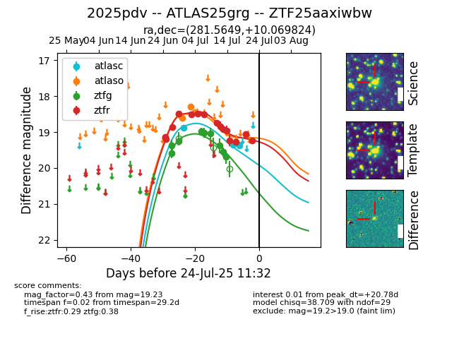

Target 2025pdv at 2025-07-24 11:32, see:
FINK: fink-portal.org/2025pdv
Lasair: lasair-ztf.lsst.ac.uk/objects/2025pdv
ALeRCE: alerce.online/object/2025pdv
TNS: wis-tns.org/object/2025pdv
YSE: ziggy.ucolick.org/yse/transient_detail/2025pdv
alt names
ZTF25aaxiwbw (ztf,fink)
2025pdv (tns,yse)
ATLAS25grg (atlas)
coordinates:
equatorial (ra, dec) = (281.5649,+10.06982)
galactic (l, b) = (41.3384,+5.71182)
photometry
last atlasc=19.37, atlaso=18.46, ztfg=19.70, ztfr=19.23
3 atlasc, 4 atlaso, 9 ztfg, 15 ztfr detections
